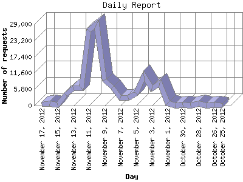

The Daily Report identifies the activity for each day within the reporting period. Remember that one page hit can result in several server requests as the images for each page are loaded.

| Day | Number of requests | Number of page requests | |
|---|---|---|---|
| 1. | October 25, 2012 | 9 | 7 |
| 2. | October 26, 2012 | 154 | 48 |
| 3. | October 27, 2012 | 43 | 19 |
| 4. | October 28, 2012 | 604 | 188 |
| 5. | October 29, 2012 | 84 | 22 |
| 6. | October 30, 2012 | 194 | 49 |
| 7. | October 31, 2012 | 32 | 13 |
| 8. | November 1, 2012 | 862 | 11 |
| 9. | November 2, 2012 | 8,046 | 39 |
| 10. | November 3, 2012 | 6,071 | 339 |
| 11. | November 4, 2012 | 10,657 | 219 |
| 12. | November 5, 2012 | 4,289 | 97 |
| 13. | November 6, 2012 | 2,774 | 133 |
| 14. | November 7, 2012 | 2,771 | 194 |
| 15. | November 8, 2012 | 6,531 | 193 |
| 16. | November 9, 2012 | 9,048 | 156 |
| 17. | November 10, 2012 | 28,974 | 180 |
| 18. | November 11, 2012 | 26,888 | 127 |
| 19. | November 12, 2012 | 6,207 | 252 |
| 20. | November 13, 2012 | 6,341 | 109 |
| 21. | November 14, 2012 | 3,801 | 160 |
| 22. | November 15, 2012 | 227 | 15 |
| 23. | November 16, 2012 | 744 | 31 |
| 24. | November 17, 2012 | 344 | 18 |
Most active day November 3, 2012 : 339 pages sent. 28,974 requests handled.
Daily average: 109 pages sent. 5,237 requests handled.
This report was generated on November 18, 2012 15:00.
Report time frame October 25, 2012 17:36 to November 17, 2012 21:41.
| Web statistics report produced by: analog 6.0 / Report Magic 2.21 |